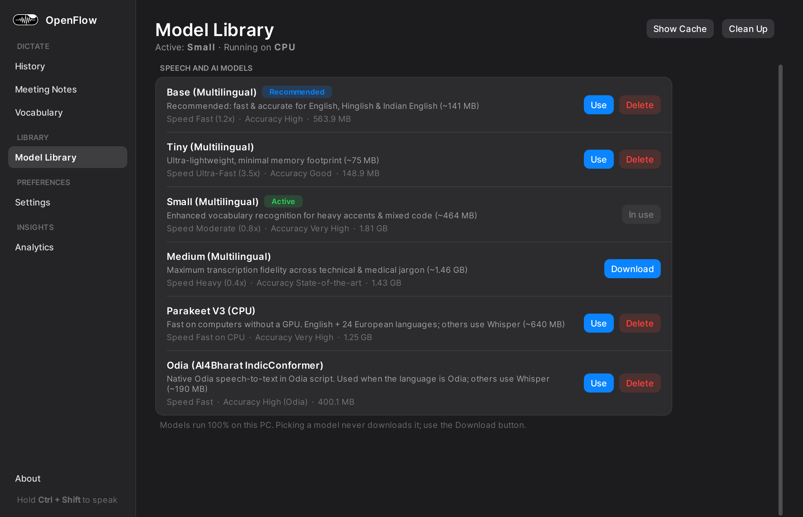

What it does
One hotkey for every app you write in, and a small capsule that shows what it heard. Everything below ships in version 1.4.0.
Dictate into any app
Hold Ctrl + Shift, speak, let go. The text is typed into whatever has focus: a chat, a document, an email, a code editor. A quick tap is ignored, so a missed shortcut never starts a recording.
Speech becomes writing
Hesitations go, “scratch that” undoes the last phrase, and spoken punctuation such as “question mark” or “new paragraph” is written as punctuation. In a code editor, “camel case user name” becomes userName.
Odia, written properly
MIRA writes Odia in Odia script, turns regional dialects into standard Odia, writes amounts as ₹500, and keeps English words such as YouTube and WhatsApp in English. Auto: Odia + English picks the language for each sentence. How MIRA works
See it as you speak
The capsule shows your words while you talk, in four styles: Standard, Compact, Micro, or an Island at the top of the screen. While you speak Odia it shows MIRA, a small face that follows your cursor.
Transcribe what is playing
From the Transcribe page in the dashboard: turn an audio or video file into text, or get live captions for a YouTube video, podcast or lecture from your speakers, with the microphone off. Calls in Google Meet, Teams and Zoom are offered as meeting notes.
Yours to tune
Add your own spellings, look back through your history, and see how much typing you saved. All of it is stored in one file on your PC.
Runs on what you have
Ordinary CPUs, NVIDIA graphics cards and Intel NPUs. The speech engine runs in its own process and unloads when idle, so a stuck model cannot freeze the app.


The models
Pick one in the Model Library; nothing downloads until you do. Measured columns: Google FLEURS, int8 on an 8-core laptop CPU, no GPU.
| Model | Used for | Download | Words wrong | Work per minute of speech | Memory |
|---|---|---|---|---|---|
| Whisper tinyOpenAI | English, lowest memory | 75 MB | 13.2% | 2.6 s | 550 MB |
| Whisper baseOpenAI | English and many languages | 141 MB | 12.5% | 5.3 s | 588 MB |
| Whisper smallOpenAI | Accents and mixed speech | 464 MB | 9.4% | 12.8 s | 757 MB |
| Whisper mediumOpenAI | Most accurate on a GPU | 1.46 GB | not measured | not measured | not measured |
| Parakeet V3NVIDIA | English and 24 European languages, fast on a CPU | 639 MB | 9.0% | 3.8 s | 1,089 MB |
| Odia IndicConformerAI4Bharat, used by MIRA | Odia, in Odia script | 200 MB | 21.7%Odia | 1.4 s | +351 MB |
| IndicTrans2AI4Bharat | Odia to English translation | 817 MB | text model | text model | not measured |
| Qwen2.5 1.5BAlibaba | Voice edits and meeting notes | 1.49 GB | text model | text model | not measured |
Words wrong is word error rate on 60 English clips (100 Odia clips for the Odia model); lower is better. Work per minute is the processor time to transcribe one minute of speech. Odia memory is what loading the model adds to the app. Full method on the research page.

How efficient it is
The same English clips through every engine, on the same laptop. Switch between accuracy, speed and memory to see the trade.
Word error rate, lower is better. Parakeet and Whisper small make the fewest mistakes; Parakeet does it in under a third of the time.
Long dictation, before and after
Wait after letting go of the key, for 30 seconds of continuous Odia.
1.4 writes your words in pieces while you talk, so little is left to do when you let go.
MIRA's writing steps
Time to clean up one Odia sentence, after the speech is recognized.
Median of 1,800 runs. Together, less than a tenth of a millisecond.
Tested before it ships
43 automated checks in 12 files. On the 1.4.0 build, 42 pass and 1 is skipped where Windows doesn't log microphone use.
| Area | What is checked | Checks |
|---|---|---|
| Model choice | Odia, English and Auto pick the right engine; Auto tells Odia from English. | 9 |
| Meeting notes | Call apps are recognized, speech is cut at pauses, the microphone watcher wakes up. | 7 |
| Island capsule | Contents fit the shape, only one capsule shows, a missed tap never leaves it recording. | 5 |
| Engine guards | Silence and noise never produce text; a stuck model is left behind, not waited on. | 5 |
| Live preview | The text in the capsule grows smoothly and never duplicates words. | 4 |
| Dictation flow | Taps are ignored, a release while the mic opens is safe, a stuck job times out. | 3 |
| Speech to writing | Fillers, corrections, punctuation commands, code and chat styles. | 3 |
| Dashboard | Scrolling the page never changes a setting under the pointer. | 2 |
| Intel NPU | The NPU engine's model names resolve, and its pipeline transcribes (checked on the CPU). | 2 |
| Odia + English words | English words come back in English; Odia words stay Odia. | 1 |
| Engine process | Starts on demand, answers, and frees all its memory when unloaded. | 1 |
| Hotkey recorder | A new shortcut is recorded the way you pressed it. | 1 |
python -m pytest openflowRun them yourself from the folder above the source code.